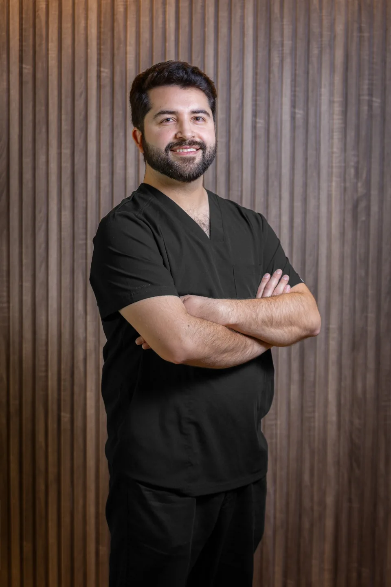

Evaluación
Limpieza
facial.
Higiene profunda, extracción controlada y renovación epidérmica avanzada para devolver a la piel su pureza y luminosidad natural.
Medicina
estética.
Tratamientos médicos no invasivos con enfoque biomimético para armonizar facciones, restaurar vitalidad y potenciar tu belleza auténtica.
Protocolos
inyectables avanzados.
Bioestimulación dérmica y técnicas inyectables de alta gama para regenerar la estructura celular, recuperar firmeza y definir contornos con máxima sutileza.
Regeneración
capilar.
Terapia celular avanzada y bioestimulación folicular de precisión para densificar, frenar la caída y reactivar la vitalidad capilar desde la raíz.
Terapias
intravenosas.
Infusiones biológicas personalizadas con antioxidantes, oligoelementos y complejos vitamínicos para restaurar la energía celular y la vitalidad cutánea.
Tratamientos
corporales.
Protocolos médicos de remodelación corporal y tonificación de tejido conectivo con tecnología clínica no invasiva de última generación.
Controles &
retoques.
Evaluación continua de evolución clínica y ajustes milimétricos personalizados para garantizar una armonía duradera y resultados naturales.

Conoce a nuestro director
Dr. Gerardo Cid
Cirujano dentista y especialista en estética facial
Director de Clínica ROSSÉ
Odontólogo con 8 años de experiencia clínica, dedicado a la armonización orofacial y al rejuvenecimiento facial. Mi enfoque combina el conocimiento anatómico, el criterio clínico y la planificación personalizada para lograr resultados naturales, armónicos y acordes a las características de cada paciente.
Mi trabajo se basa en una evaluación individualizada, priorizando la seguridad, la proporción facial y el respeto por la identidad de cada persona. A través de procedimientos estéticos como la aplicación de toxina botulínica, rellenos con ácido hialurónico y bioestimuladores de colágeno, busco realzar la belleza natural y contribuir a una mejora en tu calidad de piel.
Creo en una estética responsable, sustentada en la evidencia científica, la precisión técnica y una atención cercana, donde cada tratamiento responde a las necesidades y expectativas particulares del paciente.
Clínica ROSSÉ · Instagram
Conoce más al doctor.
Dr. Gerardo Cid, en primera persona.
Ver en Instagram
Si un video no carga, puedes verlo directamente en Instagram.
Tecnología Térmica Avanzada
Radiofrecuencia
médica facial.
La radiofrecuencia es un tratamiento estético no invasivo que utiliza energía térmica controlada para estimular las capas profundas de la piel. Su principal acción es activar la producción de colágeno y elastina, generando un efecto reafirmante y regenerador progresivo.
En pieles maduras, sus beneficios son especialmente visibles:
- Mejora la firmeza y tonicidad
- Atenúa líneas de expresión y flacidez
- Redefine el contorno facial
- Aporta luminosidad y mejor textura
- Estimula la regeneración celular de forma segura
El resultado es una piel más firme, revitalizada y naturalmente rejuvenecida, sin alterar tu expresión.